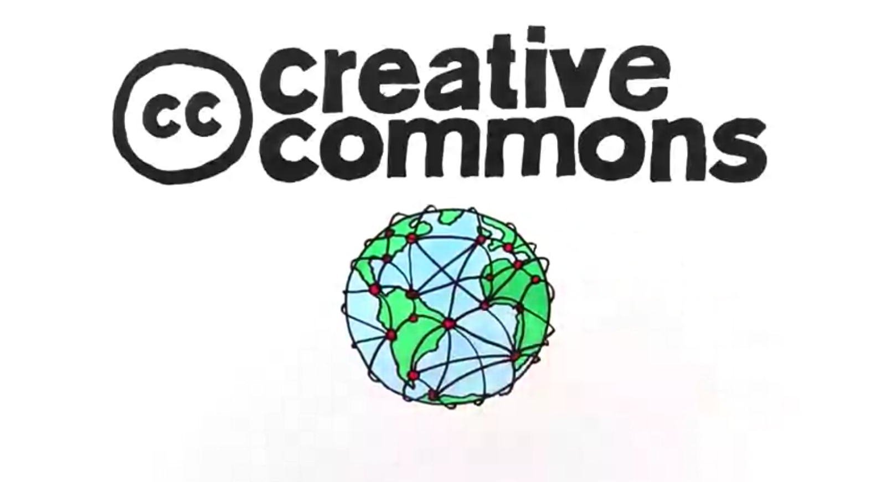

2018-06-24
2018-06-24

Creative Commons 是個全球網絡，連結了世界各地認同自由文化理念、採用開放授權條款的實踐者。Creative Commons 雖僅是註冊於美國的一個非營利組織，但經由與各地行動者的合作，其所推展的「創用CC授權條款」 (Creative Commons Licenses)，已發展到第四版並翻譯為多種語言，廣泛使用於全球。創用CC授權條款的導入、翻譯、推展等工作，過往在台灣係由在中央研究院的「台灣創用CC計畫」 [1]，以專案方式與國內眾多單位與使用者協力進行。
2015 年起，Creative Commons 進行一系列關於「全球網絡策略」 (Global Network Strategy) 的諮詢 [2]。2018 年四月在加拿大多倫多召開了 CC 全球會 (Creative Commons Global Summit) [3] 之後，此全球網絡策略也就將全面開展 [4] [5]。此全球網絡策略，將以世界各地自行組織的 Chapter，為全球推展 CC 授權的基石。這項策略的背景與細節，可參考線上文件集 [6]。此外 Creative Commons 也將成立 「CC 全球網絡」 (Creative Commons Global Network)，並募集個人以及機構為會員 (Member)，以凝聚眾人力量，協力發展 CC 相關平台，並參與此全球網絡的治理。CC 全球網絡的詳情可參見其會員網址 [7]。
CC 台灣 Chapter 首次籌組會議，將於 6 月 30 日週六下午一點半舉行，地點訂於開放文化基金會於台北的辦公室（台北市中正區八德路一段 94 號 4F） [8]。敬請關心 CC 授權以及 Creative Commons 全球發展的朋友，參與此次的籌組會議，並煩請先行以電子郵件向 cc@ocf.tw 表達參與意願。在此我們也特別感謝開放文化基金會行政中心，出面召集這次的籌組會議。
A New Chapter for CC Taiwan
Creative Commons is a global network connecting practitioners who adhere to the free culture ideal and use the various open content licenses. The Creative Commons organization itself is a registered non-profit in the United States. By collaborating with activists worldwide, however, it has developed the Creative Commons License suite to the 4th edition. The licenses have been ported to many jurisdictions and translated into multiple languages. They are widely used. The Creative Commons Licenses were introduced to and localized for Taiwan by a small project-based team in Academia Sinica beginning in 2003. Since then the "Creative Common Taiwan Project" [1] at Academia Sinica has worked with many agencies, organizations, and communities in Taiwan to popularize the CC Licenses.
In 2015 the Creative Commons started a consultation process in order to develop a Global Network Strategy [2]. Since after the 2018 Creative Commons Global Summit [3], held in April in Toronto, Canada, the Global Network Strategy has been put into place [4] [5]. In this new Strategy, self-organized Chapters worldwide will be the cornerstones in promoting the Creative Commons Licenses. The background leading to the Strategy, as well as its many details, can be found online [6]. In particular, a Creative Commons Global Network has been formed; individuals and institutions can join as Members to help develop various Creative Commons platforms. Members may also participate in the governance of the Creative Commons Global Network. Details about the Creative Commons Global Network can be found at its website [7].
The first meeting for setting up the CC Taiwan Chapter is planned to start at 1:30 pm on June 30 (Saturday) [8]. The location for the meeting is the Taipei Office of the Open Culture Foundation (4F, no. 94, Section 1, Bade Road, Jhonhjheng District, Taipei City). Whoever care about the CC Licenses and the global development of the Creative Commons are invited to participate in this organizing meeting. Please send an e-mail message to cc@ocf.tw to express your interest in participating in the meeting. We are especially grateful to the administration at the Open Culture Foundation to call for and organize this meeting.
[1] http://creativecommons.tw/
[2] https://consultation.creativecommons.org/
[3] https://summit.creativecommons.org/sessions2018/
[4] https://creativecommons.org/2018/02/23/global-network/
[5] https://creativecommons.org/2018/04/04/growing-open-movement-claudio-ruiz-ccs-global-network/
[6] https://github.com/creativecommons/global-network-strategy/
[7] https://network.creativecommons.org/
[8] https://ocf.tw/about/#contact_us